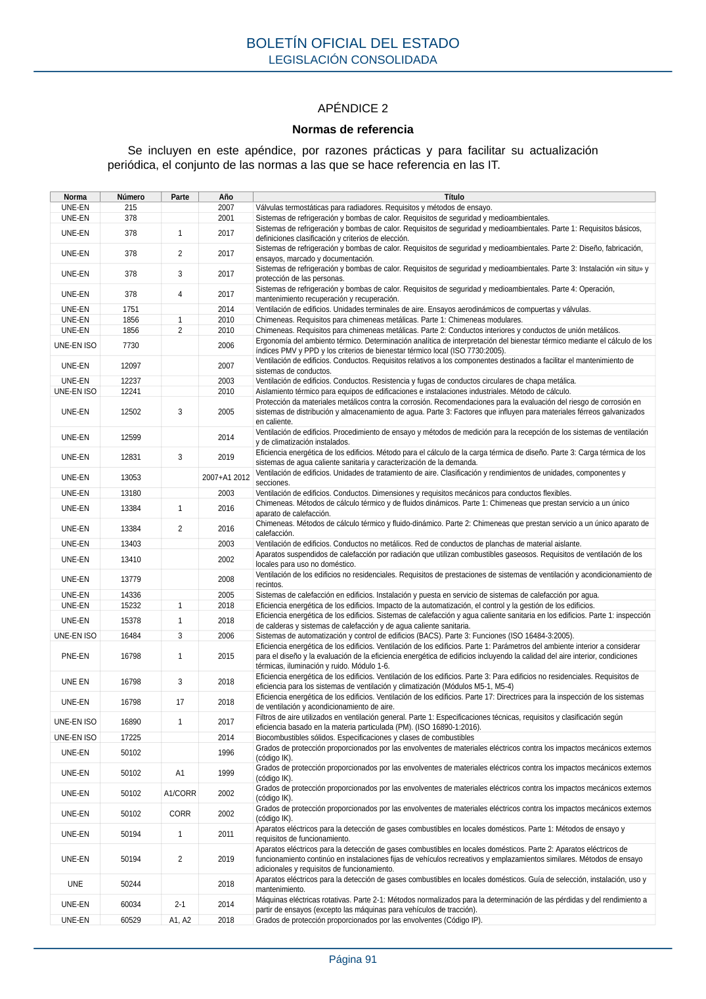

DB-HE2 RITE · edición 2022-08-02 · capa asociada
Documento RITE-asociada · SHA-256 del PDF ad1680c83bf4c7f5c656af1794c32ad0669ad9f36ac293737ff3f95177ff7b26
Copia fiel del PDF fuente · Fuente oficial
Ficha de la disposición en la fuente oficial
Texto extraído y reorganizado: Basado en datos de la Agencia Estatal Boletín Oficial del Estado. PDF reproducido: Fuente de los datos: Agencia Estatal Boletín Oficial del Estado.
Formatos: JSON del segmento · Markdown
Se incluyen en este apéndice, por razones prácticas y para facilitar su actualización periódica, el conjunto de las normas a las que se hace referencia en las IT. periódica, el conjunto de las normas a las que se hace referencia en las IT. Norma Número Parte Año Título UNE-EN 215 2007 Válvulas termostáticas para radiadores. Requisitos y métodos de ensayo. UNE-EN 378 2001 Sistemas de refrigeración y bombas de calor. Requisitos de seguridad y medioambientales. UNE-EN 378 1 2017 Sistemas de refrigeración y bombas de calor. Requisitos de seguridad y medioambientales. Parte 1: Requisitos básicos, definiciones clasificación y criterios de elección. UNE-EN 378 2 2017 Sistemas de refrigeración y bombas de calor. Requisitos de seguridad y medioambientales. Parte 2: Diseño, fabricación, ensayos, marcado y documentación. UNE-EN 378 3 2017 Sistemas de refrigeración y bombas de calor. Requisitos de seguridad y medioambientales. Parte 3: Instalación «in situ» y protección de las personas. UNE-EN 378 4 2017 Sistemas de refrigeración y bombas de calor. Requisitos de seguridad y medioambientales. Parte 4: Operación, mantenimiento recuperación y recuperación. UNE-EN 1751 2014 Ventilación de edificios. Unidades terminales de aire. Ensayos aerodinámicos de compuertas y válvulas. UNE-EN 1856 1 2010 Chimeneas. Requisitos para chimeneas metálicas. Parte 1: Chimeneas modulares. UNE-EN 1856 2 2010 Chimeneas. Requisitos para chimeneas metálicas. Parte 2: Conductos interiores y conductos de unión metálicos. UNE-EN ISO 7730 2006 Ergonomía del ambiento térmico. Determinación analítica de interpretación del bienestar térmico mediante el cálculo de los índices PMV y PPD y los criterios de bienestar térmico local (ISO 7730:2005). UNE-EN 12097 2007 Ventilación de edificios. Conductos. Requisitos relativos a los componentes destinados a facilitar el mantenimiento de sistemas de conductos. UNE-EN 12237 2003 Ventilación de edificios. Conductos. Resistencia y fugas de conductos circulares de chapa metálica. UNE-EN ISO 12241 2010 Aislamiento térmico para equipos de edificaciones e instalaciones industriales. Método de cálculo. UNE-EN 12502 3 2005 Protección da materiales metálicos contra la corrosión. Recomendaciones para la evaluación del riesgo de corrosión en sistemas de distribución y almacenamiento de agua. Parte 3: Factores que influyen para materiales férreos galvanizados en caliente. UNE-EN 12599 2014 Ventilación de edificios. Procedimiento de ensayo y métodos de medición para la recepción de los sistemas de ventilación y de climatización instalados. UNE-EN 12831 3 2019 Eficiencia energética de los edificios. Método para el cálculo de la carga térmica de diseño. Parte 3: Carga térmica de los sistemas de agua caliente sanitaria y caracterización de la demanda. UNE-EN 13053 2007+A1 2012Ventilación de edificios. Unidades de tratamiento de aire. Clasificación y rendimientos de unidades, componentes y secciones. UNE-EN 13180 2003 Ventilación de edificios. Conductos. Dimensiones y requisitos mecánicos para conductos flexibles. UNE-EN 13384 1 2016 Chimeneas. Métodos de cálculo térmico y de fluidos dinámicos. Parte 1: Chimeneas que prestan servicio a un único aparato de calefacción. UNE-EN 13384 2 2016 Chimeneas. Métodos de cálculo térmico y fluido-dinámico. Parte 2: Chimeneas que prestan servicio a un único aparato de calefacción. UNE-EN 13403 2003 Ventilación de edificios. Conductos no metálicos. Red de conductos de planchas de material aislante. UNE-EN 13410 2002 Aparatos suspendidos de calefacción por radiación que utilizan combustibles gaseosos. Requisitos de ventilación de los locales para uso no doméstico. UNE-EN 13779 2008 Ventilación de los edificios no residenciales. Requisitos de prestaciones de sistemas de ventilación y acondicionamiento de recintos. UNE-EN 14336 2005 Sistemas de calefacción en edificios. Instalación y puesta en servicio de sistemas de calefacción por agua. UNE-EN 15232 1 2018 Eficiencia energética de los edificios. Impacto de la automatización, el control y la gestión de los edificios. UNE-EN 15378 1 2018 Eficiencia energética de los edificios. Sistemas de calefacción y agua caliente sanitaria en los edificios. Parte 1: inspección de calderas y sistemas de calefacción y de agua caliente sanitaria. UNE-EN ISO 16484 3 2006 Sistemas de automatización y control de edificios (BACS). Parte 3: Funciones (ISO 16484-3:2005). PNE-EN 16798 1 2015 Eficiencia energética de los edificios. Ventilación de los edificios. Parte 1: Parámetros del ambiente interior a considerar para el diseño y la evaluación de la eficiencia energética de edificios incluyendo la calidad del aire interior, condiciones térmicas, iluminación y ruido. Módulo 1-6. UNE EN 16798 3 2018 Eficiencia energética de los edificios. Ventilación de los edificios. Parte 3: Para edificios no residenciales. Requisitos de eficiencia para los sistemas de ventilación y climatización (Módulos M5-1, M5-4) UNE-EN 16798 17 2018 Eficiencia energética de los edificios. Ventilación de los edificios. Parte 17: Directrices para la inspección de los sistemas de ventilación y acondicionamiento de aire. UNE-EN ISO 16890 1 2017 Filtros de aire utilizados en ventilación general. Parte 1: Especificaciones técnicas, requisitos y clasificación según eficiencia basado en la materia particulada (PM). (ISO 16890-1:2016). UNE-EN ISO 17225 2014 Biocombustibles sólidos. Especificaciones y clases de combustibles UNE-EN 50102 1996 Grados de protección proporcionados por las envolventes de materiales eléctricos contra los impactos mecánicos externos (código IK). UNE-EN 50102 A1 1999 Grados de protección proporcionados por las envolventes de materiales eléctricos contra los impactos mecánicos externos (código IK). UNE-EN 50102 A1/CORR 2002 Grados de protección proporcionados por las envolventes de materiales eléctricos contra los impactos mecánicos externos (código IK). UNE-EN 50102 CORR 2002 Grados de protección proporcionados por las envolventes de materiales eléctricos contra los impactos mecánicos externos (código IK). UNE-EN 50194 1 2011 Aparatos eléctricos para la detección de gases combustibles en locales domésticos. Parte 1: Métodos de ensayo y requisitos de funcionamiento. UNE-EN 50194 2 2019 Aparatos eléctricos para la detección de gases combustibles en locales domésticos. Parte 2: Aparatos eléctricos de funcionamiento continúo en instalaciones fijas de vehículos recreativos y emplazamientos similares. Métodos de ensayo adicionales y requisitos de funcionamiento. UNE 50244 2018 Aparatos eléctricos para la detección de gases combustibles en locales domésticos. Guía de selección, instalación, uso y mantenimiento. UNE-EN 60034 2-1 2014 Máquinas eléctricas rotativas. Parte 2-1: Métodos normalizados para la determinación de las pérdidas y del rendimiento a partir de ensayos (excepto las máquinas para vehículos de tracción). UNE-EN 60529 A1, A2 2018 Grados de protección proporcionados por las envolventes (Código IP). BOLETÍN OFICIAL DEL ESTADO LEGISLACIÓN CONSOLIDADA Página 91
